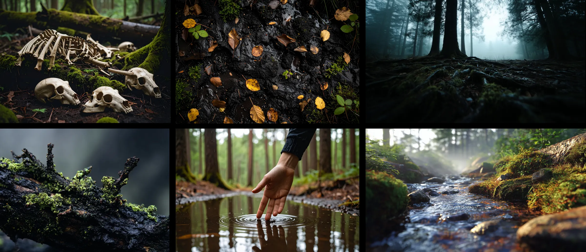
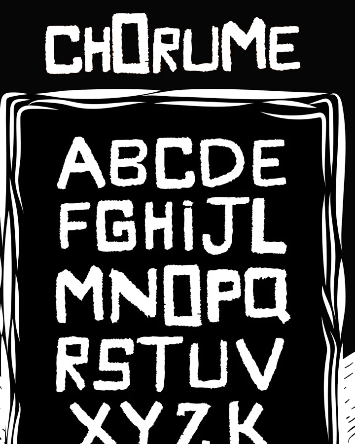
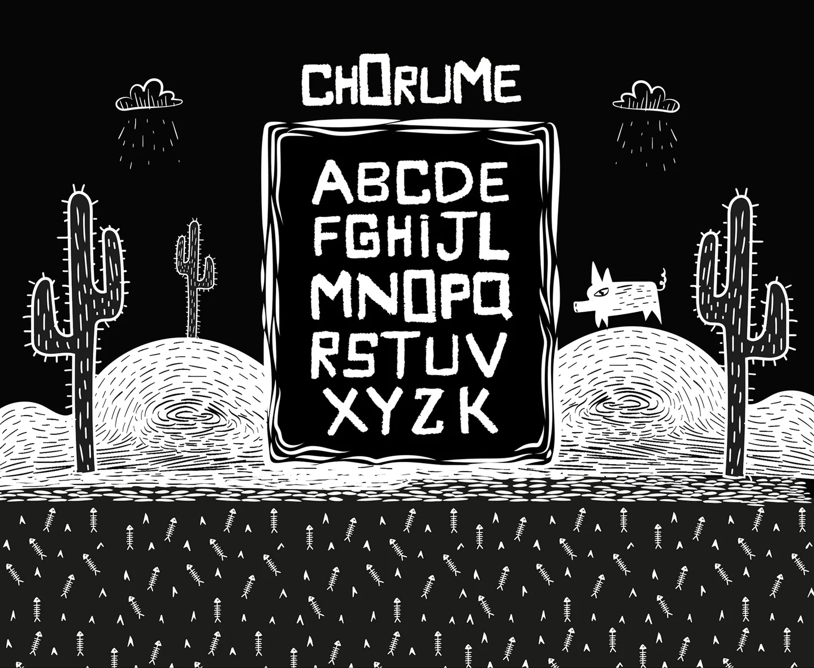
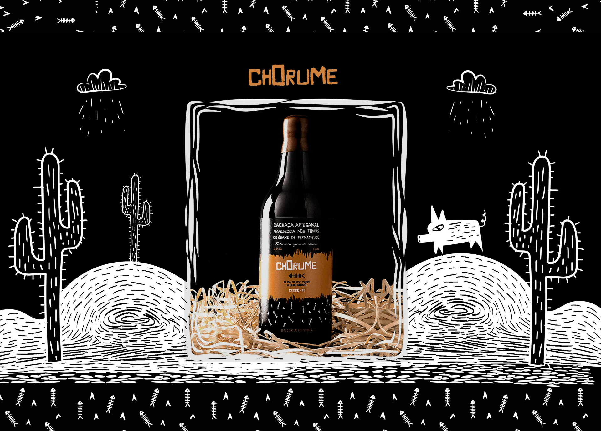
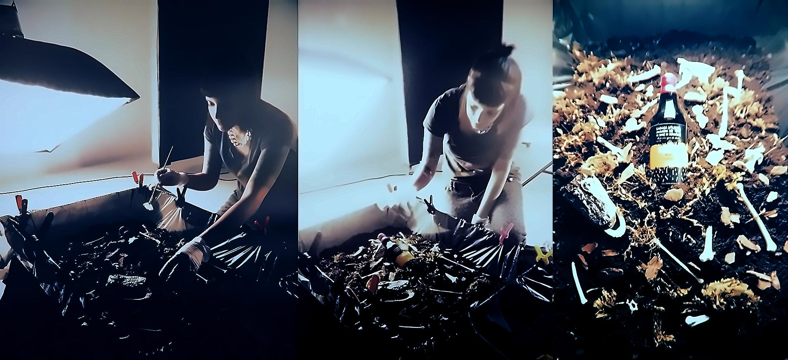
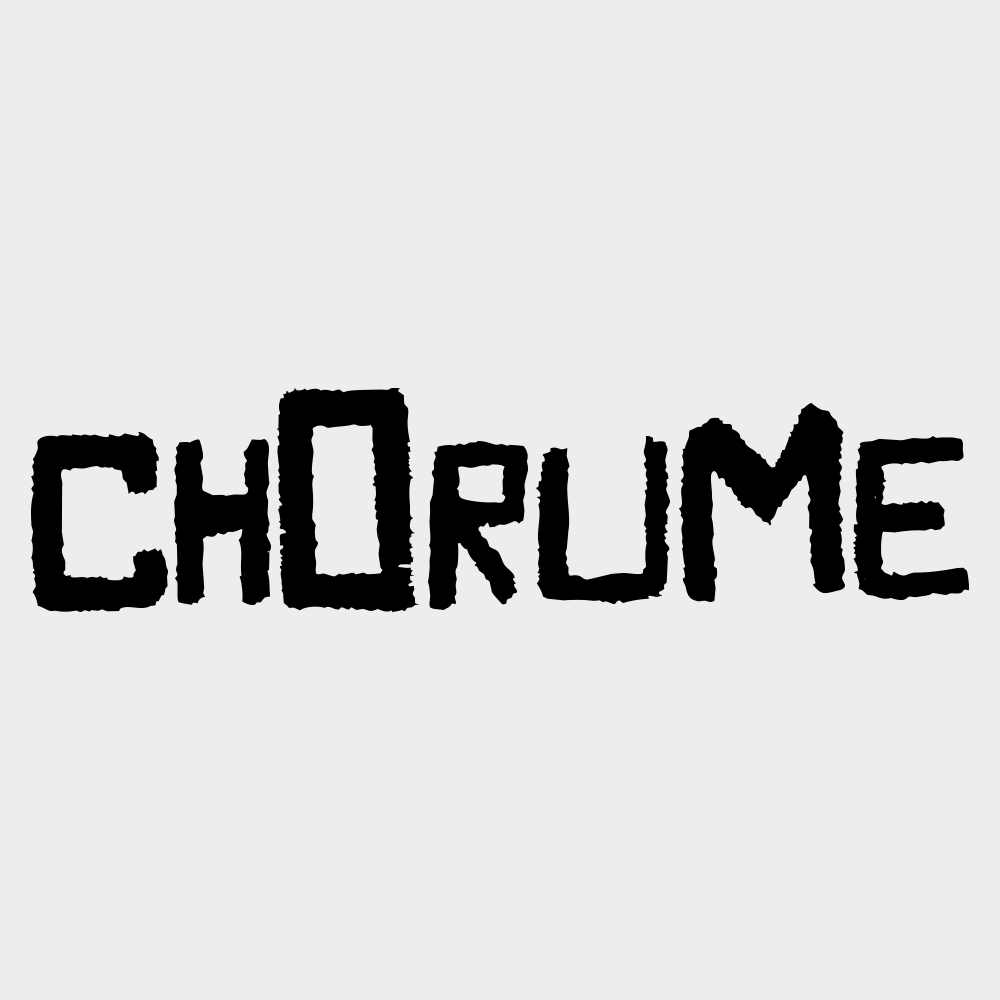
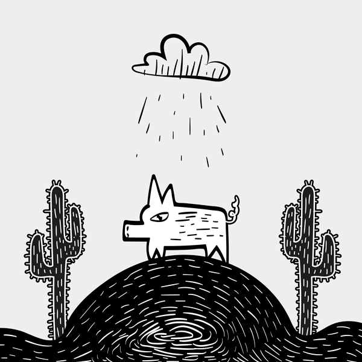
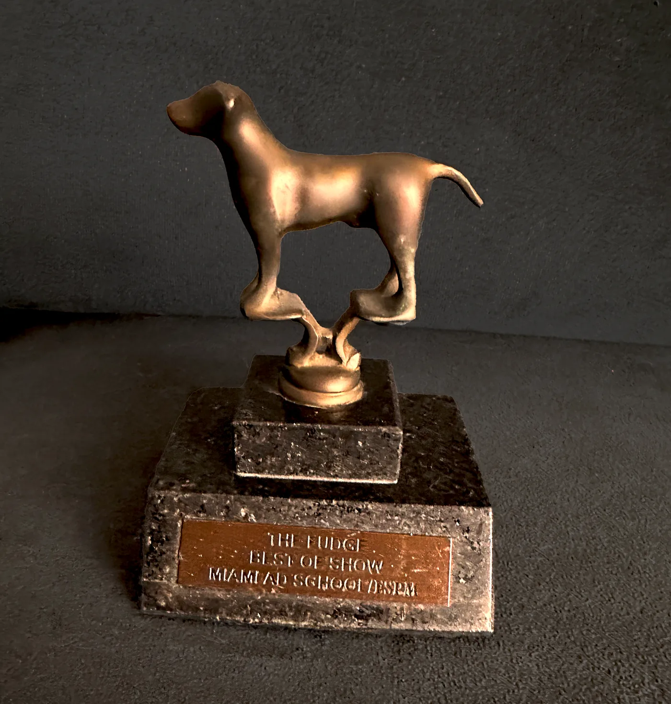

ChorumeTipografia
Projeto autoral de tipografia vernacular que virou ecossistema gráfico. De um cartaz de rua à criação de uma cachaça fictícia com identidade visual completa, envolvendo fonte desenhada à mão, direção de arte, cenografia e fotografia.
O ponto de partida
Um cartaz colado num muro do bairro da Liberdade, em São Paulo. Pincel grosso, régua nenhuma, zero pretensão estética. Apenas urgência e funcionalidade. Esse traço irregular, essa imperfeição brutal que nasce do improviso, foi a centelha que acendeu todo o projeto.

Cartaz original: pincel, improviso, urgência. Ponto zero do Chorume.
Vernacular como matéria-prima
O vernacular brasileiro de rua é um tipo de design que ninguém assina. Ele existe porque precisa existir, e é essa urgência que o torna honesto.
A força daquele traço, sua irregularidade brutal e funcional, revelava uma identidade visual espontânea, nascida do improviso. Cada letra carregava ritmo próprio, peso inconsistente, alinhamento impreciso. Não era feio por falta de técnica. Era honesto. Era vivo.
Esse gesto gráfico foi a matéria-prima para o desenvolvimento da tipografia Chorume, que preservaria o ritmo, os erros e a urgência de sua origem. Nada deveria ser "corrigido" para parecer sofisticado. Tudo deveria soar como barro vermelho e chuva.

Moodboard de pesquisa: atmosfera de decomposição, terra úmida, permanência orgânica. O conceito que sustentou todo o branding.
A fonte
A partir das letras do cartaz, desenhei um alfabeto completo mantendo as imperfeições como parte da identidade.
A fonte explora irregularidades como ritmo, peso e alinhamento, reforçando o aspecto orgânico e marginal do seu ponto de origem. Cada letra preserva o pulso manual do gesto original, como se tivesse sido desenterrada de um sitio arqueológico.

Alfabeto Chorume: 26 letras com imperfeições preservadas.

Ambiente imersivo: fonte em contexto pós-apocalíptico.
Inventar o Chorume
O nome surgiu naturalmente: Chorume. Cachaça artesanal fictícia, água da chuva, decomposição orgânica, fermentação.
Imaginei uma garrafa escura, com rótulo que misturasse xilogravura e tipografia autoral, símbolos de morte e regeneração, sertão e pântano. A composição equilibra o grotesco e o lúdico, o artesanal e o especulativo. A parte inferior do rótulo, com padrões de insetos e vegetação, remete à fermentação, à decomposição, aos processos vivos que transformam matéria morta em algo novo.

Garrafa Chorume: identidade visual completa de uma bebida fictícia que existe apenas em imaginação e fotografia.
Direção de arte
Para materializar essa narrativa obscura e viva, construí um pântano cenográfico em estúdio.
Aquário de vidro, terra úmida, musgo vivo, ossos reais (emprestados por um estudante de veterinária). A composição foi pensada como um relicário fúnebre da garrafa, como se tivesse sido desenterrada de um sítio arqueológico pós-apocalíptico. A iluminação reforça a sensação de profundidade e abandono.

Detalhe: garrafasob luz, rótulo em evidência, contexto sombrio.

Making-of: construção do pântano em estúdio, processo físico e sensorial.
Animação e movimento
O projeto também explorou o movimento: tipografia e mascote animados em GIF.
A wordmark Chorume ganha vida em loop contínuo, e um pequeno mascote (a criatura do pântano) emerge da escuridão. A animação reforça o caráter vivo e orgânico da marca, transformando pixels em ritmo biológico.

Wordmark animada: tipografia ganha movimento fluido.

Mascote: criatura do pântano em loop perpétuo.
Resíduo
Chorume é, ao mesmo tempo, uma crítica e uma celebração: do lixo nasce linguagem, da decomposição nasce um novo design.
Vernacular tem ofício próprio
Aprendi a olhar para coisas que ninguém olha, a respeitar a urgência do improviso e a confiar que o craft existe em todo lugar, não só nos lugares premiados. O vernacular não é falta de design. É design de verdade.
Imperfeição é assinatura
Aprendi que imperfeição não diminui, expande. Cada traço irregular carrega a mão de quem desenhou, a urgência de quem criou, a verdade de quem não fingiu sofisticação. Isso é memória visual.
O olho que desenhou resiste
O olho que desenhou essas letras em 2015 ainda mora em cada interface que eu construo hoje. O Chorume não é um projeto encerrado. É um lugar que revisito sempre que preciso lembrar que design é gesto, e gesto é honestidade.
O Fudge
Best of Show da Miami Ad School. Um troféu de bronze com uma palavra gravada: "Fudge".
O projeto foi reconhecido com o prêmio máximo da Miami Ad School, eleito entre todos os trabalhos da turma. Dez anos depois, o troféu ainda está na minha estante. Serve como lembrete de onde minha linguagem visual começou: olhando para coisas que ninguém olha, respeitando o improviso, acreditando no gesto.

The Fudge: prêmio de melhor trabalho da turma, 2015.